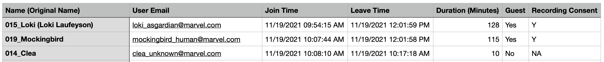
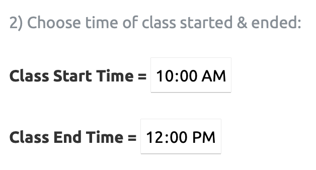
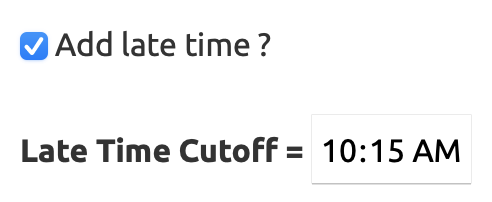
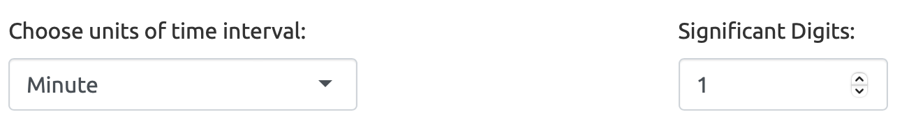

Zoom Interface Manual
คู่มือการใช้งาน Zoom Interface App
Web application วิเคราะห์ Zoom participant report (
.csv) และ รวบรวม Zoom chat file จาก.txtเป็น excel
App Link: https://si-physio-intern.shinyapps.io/zoom_interface
Zoom Class Report
วิธีใช้
- Upload Zoom Participant Report
.csv - Choose Time: Class Start Time, Class End Time, Late Cutoff
- Upload File ID: ที่มี column
Nameเป็นรายชื่อนักศึกษา และIDเป็นรหัสนักศึกษา 7 หลัก - Results: สามารถดูผลลัพท์จากตารางที่แสดงใน App และ Download ผลเป็น Excel ได้
1. Upload Zoom Participant Report

Zoom participant report เป็นไฟล์ .csv ที่ host สามารถ download มาได้จากโปรแกรม Zoom ซึ่งโดย default แล้ว จะมี column ดังนี้:
- Name (Original Name): เริ่มต้นด้วยชื่อที่แสดงใน Zoom และชื่อ Original Name ที่ตั้งไว้ก่อนจะเข้า Zoom ในวงเล็บข้างท้าย
- User Email: เป็น email ที่ผู้เข้าร่วมที่ signed in สำหรับ Zoom account
- Join Time: เวลาที่ผู้เข้าร่วม join meeting ในแต่ละ session
- Leave Time: เวลาที่ผู้เข้าร่วม leave meeting ในแต่ละ session
- Duration (Minutes): คิดจาก
Leave Time-Join Timeของแต่ละ session - Guest: “Yes” หมายถึง participants; “No” หมายถึง host
- Recording Consent: “Y” หมายถึงมีการยินยอมให้ record ใน zoom
รูปตัวอย่าง Zoom Participant Report .csv

2. Choose Time
ใส่ Class Start Time เป็น เวลาที่เริ่มคาบเรียน และ Class End Time เป็น เวลาที่คาบจบ

หากต้องการคำนวนเวลามาสาย ให้ติ๊กปุ่ม Add late time ?
จากนั้นใส่ Late Time Cutoff ซึ่งหมายถึง เวลาที่ตัดว่า ถ้านักเรียนมาเข้า Zoom สายกว่าเวลานี้ จะถือว่าสาย และจะมีคำนวนเวลาให้ว่าสายกี่นาทีด้วย

สรุป : จากตัวอย่างในรูปด้านบน ตั้งค่าให้ เวลาเริ่ม 10:00 น. เวลาจบ 12:00 น. โดยตัดสายเมื่อนักเรียนเข้า Zoom ครั้งแรก ช้ากว่า 10:15 น. เป็นต้นไป
Drop down: Choose units of time interval: สำหรับเลือกว่าให้ผลลัพท์ของช่วงเวลาออกมาในหน่วยใด เช่น Minute, Hour, Second, หรือ Display Text (HMS) คือแสดงเป็นข้อความ
Significant Digits: สำหรับเลือกจุดทศนิยมว่ากี่ตำแหน่ง

3. Upload File ID

ให้ Upload file รายชื่อนักศึกษา (File ID) โดยต้องมี column ที่ตั้งชื่อว่า Name มีข้อมูลชื่อนักศึกษา และ column ID มีข้อมูลรหัสนักศึกษา 7 หลัก
4. Results
สามารถดูผลลัพท์จากตารางที่แสดงใน App หรือ Download เป็น Excel file ได้

app นี้จะ extract รหัสนักศึกษา 7 หลักจากชื่อใน Zoom participants report เข้ามา match กับไฟล์รายชื่อนักศึกษา (File ID) โดยจะแสดงผลในตารางดังนี้
Students Summary
ตาราง Students Summary จะสรุปข้อมูลเชิงเวลา ของรหัสนักศึกษา 7 หลักของแต่ละคน ผลลัพท์จะเป็นตารางที่มี column ดังนี้
Output Columns:
ID: รหัสนักศึกษา 7 หลัก ที่ถูกดึงออกมาจาก column
Name (Original Name)ของ Zoom participant reportName: รวมรายชื่อทั้งหมดที่พบในแต่ละ
IDโดยถ้ามี upload ID file ด้วยName_from_IDจะแสดงถึงชื่อจาก file ID และName_from_Zoomจะแสดงถึงชื่อจาก Zoom participant reportEmail: รวม Email ของแต่ละ
IDSession_Count: แสดงการนับจำนวนครั้งที่นักเรียนแต่ละคน join หรือ leave จากโปรแกรม Zoom
First_Join_Time: แสดงเวลาที่ join ครั้งแรกสุด ของแต่ละ
IDLast_Leave_Time: แสดงเวลาที่ leave ครั้งสุดท้าย ของแต่ละ
IDBefore_Class: แสดงช่วงเวลาที่อยู่ใน zoom ก่อน คาบเรียนเริ่ม ของแต่ละ
IDDuring_Class: แสดงช่วงเวลาที่อยู่ใน zoom ระหว่าง คาบเรียน ของแต่ละ
IDAfter_Class: แสดงช่วงเวลาที่อยู่ใน zoom หลัง คาบเรียนจบ ของแต่ละ
IDTotal_Time:
Before_Class+During_Class+After_ClassMulti_Device:
TRUEแสดงว่านักเรียน เข้า Zoom ด้วยอุปกรณ์มากกว่า 1 เครื่อง ใน session ใดๆ (โปรแกรมจะดูว่า ชื่อนักเรียนแต่ละคนมี session ใน zoom ที่ overlap กันหรือไม่ ถ้ามี แสดงว่าใช้อุปกรณ์มากกว่า 1 เข้า zoom)Late_Time: ถ้าใส่ “Late Time Cutoff” ใน step 2 ไปแล้ว column Late_Time นี้แสดงถึงช่วงเวลาที่มาสาย โดยคำนวณจาก
First_Join_Time-Late Time Cutoff
Missing Names
ตารางนี้จะแสดง rows ที่ไม่พบชื่อนักศึกษาจาก column Name_from_ID หรือ Name_from_Zoom ซึ่งจะเป็นการแสดงชื่อนักศึกษาที่มี ID ไม่ match
Individual Sessions
ตาราง Individual Sessions นี้จะสรุปข้อมูลเชิงเวลา ของแต่ละ session ใน Zoom ของนักศึกษาแต่ละคน ผลลัพท์จะเป็นตารางที่มี column ดังนี้
Output Columns:
Name (Original Name): จาก column: ‘Name (Original Name)’ ของ Zoom participant report
Name: ชื่อที่ปรากฏใน Zoom ของผู้เข้าร่วม
Name_Original: ชื่อ Original ที่ตั้งขึ้นก่อนเข้า Zoom
Email: จาก ‘User Email’ column ของ Zoom participant report
Session: แสดงถึง active session ใน Zoom ของนักเรียนแต่ละคน โดยเป็นการ rank
Join_Timeในแต่ละกลุ่มของName (Original Name)และEmailJoin_Time: จาก ‘Join Time’ column ของ Zoom participant report
Leave_Time: จาก ‘Leave Time’ column ของ Zoom participant report
Before_Class: แสดงช่วงเวลาที่อยู่ใน zoom ก่อน คาบเรียนเริ่ม ในแต่ละ session
During_Class: แสดงช่วงเวลาที่อยู่ใน zoom ระหว่าง คาบเรียน ในแต่ละ session
After_Class: แสดงช่วงเวลาที่อยู่ใน zoom หลัง คาบเรียนจบ ในแต่ละ session
Total_Time:
Before_Class+During_Class+After_ClassRec_Consent: จาก ‘Recording Consent’ column ของ Zoom participant report
Multi_Device:
TRUEแสดงว่านักเรียน เข้า Zoom ด้วยอุปกรณ์มากกว่า 1 เครื่อง ในแต่ละ session
Zoom Chat Explore
วิธีใช้
- Upload Zoom chat file นามสกุล
.txt - (Optional) Upload File ID: ที่มี column
Nameเป็นรายชื่อนักศึกษา และIDเป็นรหัสนักศึกษา 7 หลัก - Results: สามารถดูผลลัพท์จากตารางที่แสดงใน App และ Download ผลเป็น Excel ได้
1. Upload Zoom Chat file
Download Zoom chat file นามสกุล .txt จาก Zoom Recording ซึ่งจะมีลักษณะแบบนี้:
Upload ไฟล์ใน App
2. Upload File ID (Optional)
ให้ Upload file รายชื่อนักศึกษา (File ID) โดยต้องมี column ที่ตั้งชื่อว่า Name มีข้อมูลชื่อนักศึกษา และ column ID มีข้อมูลรหัสนักศึกษา 7 หลัก
3. Results
3.1 Raw Chat
ตารางนี้จะแปลง content จากไฟล์ .txt เป็นในรูปแบบตาราง โดยมี column ดังนี้:
Time: เวลาของแต่ละ message
Name: ชื่อผู้ตอบ
Target: เป้าหมาย (ถ้ามี) เช่น “Everyone”
Content: message ที่พิมพ์ใน chat box
3.2 Count Chat
ตารางนี้จะสรุปข้อมูลในแต่ละบุคคล โดยมี column ดังนี้:
ID: รหัสนักศึกษา 7 หลักที่ดึงออกจาก column:
NameName*: ชื่อผู้ตอบ (ถ้ามีการ Upload file ID ด้วย จะแยกเป็น
Name_from_ID,Name_from_Zoom)Message_Count: นับจำนวน message ที่แต่ละคน send
Content: รวม message ทุกครั้งของแต่ละคนใน chat box แยกแต่ละครั้งด้วย
~
3.3 Word Cloud
Word Cloud ของ Content แยกตาม word
ใน app อาจแสดงไม่ค่อยสวยเท่าไรนัก